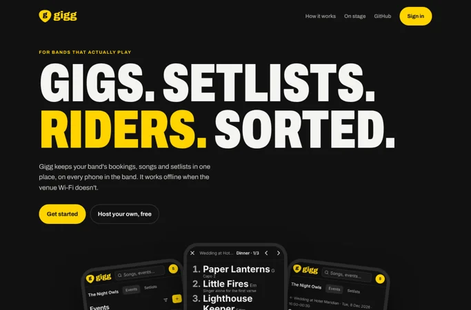
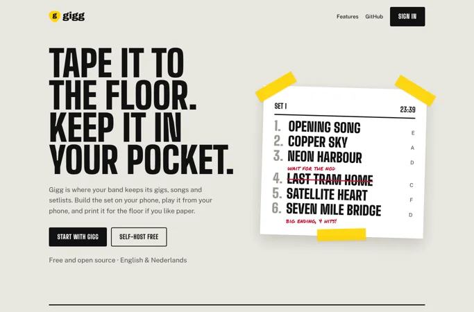
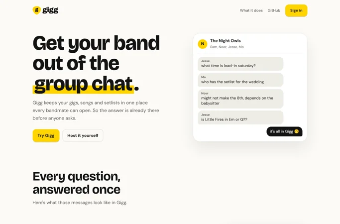
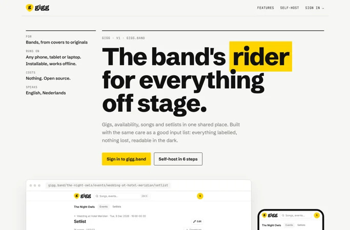

Each uses real screenshots of the app. Open one to see the full page.

Dark gig-poster look. Huge condensed headline, phones fanned like a stage, then the night in running order.

The page is a setlist taped to the stage floor, with marker notes. Each section is a set with its own running time.

Starts from the band's group chat. Every question in it gets answered by a screen in Gigg.

Swiss grid and mono labels. Features as a stage input list, house rules, and the self-host steps.